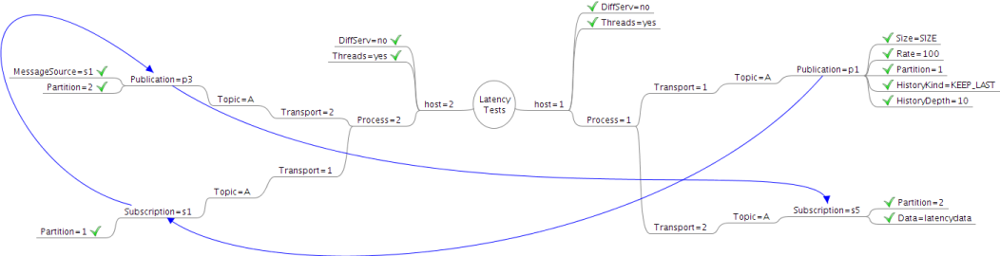

Performance > Latency TestsOpenDDS - Performance Test Descriptions
Latency Tests
The latency tests determine the performance of OpenDDS delivering data of different sizes via all the available transport mechanisms. The tests themselves were setup as two processes on two separate hosts, with a publication and subscription in each process. The originating process publishes test data on a partition which is received by a subscription in the other process which republishes the data on a separate partition to be received by a subscription in the originating process. This allows timing information to be as accurate as possible since the same process will be taking the send time and receive time measurements. This arrangement is illustrated in the diagram below.

These tests were executed for 2 minutes to ensure that enough data was collected. The last 5,000 sample latencies were stored and reported for analysis. This means that the last 50 seconds of data is used in the analysis for latency and jitter. The SIZE parameter was varied for different test executions, with a separate test executed for each of 50, 100, 250, 500, 1000, 2500, 5000, 8000, 16000, and 32000 bytes.
$Id: latency_tests.html 50 2010-01-29 23:53:21Z martinezm $